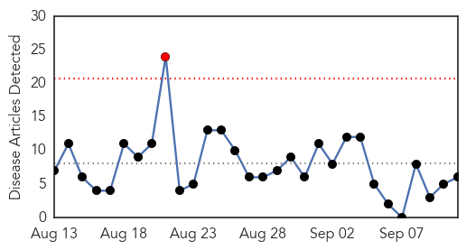
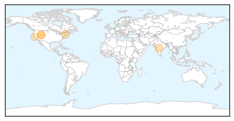
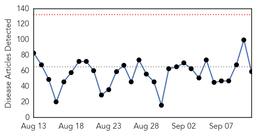
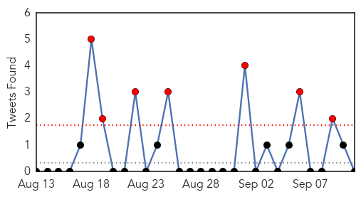
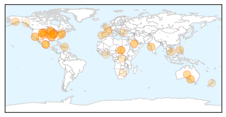

West Nile Virus
30-Day Web Trend
1 alerts, 0 warnings

30-Day Twitter Trend
1 alerts, 0 warnings

Article Locations
Article Confidences

Top Articles:
- 0.991
- DHEC Seeks Public’s Help In Fighting Mosquito-Borne Illnesses
- 0.957
- Howard Beach Man Being Treated for West Nile Virus: Report
- 0.953
- 3 Salt Lake County residents infected with West Nile Virus
- 0.936
- West Nile Virus found in greater Springfield area
- 0.849
- 3 human West Nile Virus cases in Salt Lake County, officials say - Story
- 0.786
- San Mateo County CA: Mosquito District Monthly Update
Top Tweets:
- 0.577
- Flavivirus news: Another mosquito pool tests positive for West Nile virus in Frisco - Dallas Mo... http://t.co/bWwKs0Xy2v pathogenposse
Unknown
30-Day Web Trend
0 alerts, 0 warnings

30-Day Twitter Trend
7 alerts, 8 warnings

Article Locations
Article Confidences
Top Articles:
- 0.998
- Sneeze etiquette will help prevent Mers during Haj
- 0.989
- US Shigella Infections: “A Troubling Trend”
- 0.978
- Health officials baffled by rise of ‘rabbit fever’ across U.S. West
- 0.964
- Can Cats Get or Give Legionnaires' Disease?
- 0.959
- Knox County Health Department already seeing flu cases
- 0.958
- Philippines urges its Muslims to postpone Haj pilgrimage to Saudi Arabia
- 0.935
- Veterans' home eases some restrictions after deadly bacteria
- 0.930
- Seven salmonella cases in SC linked to nationwide outbreak
- 0.924
- Veterans’ home eases some restrictions after deadly bacteria
- 0.914
- Veterans' home eases some restrictions after deadly bacteria - MyNorthwest
- 0.905
- Combat Grapevine Leafroll And Tobacco Ringspot Disease
- 0.903
- 'No new legionnaire's cases' in Greater Oporto
- 0.890
- Hand, foot and mouth disease spirals in Ho Chi Minh City
- 0.886
- Health officials baffled by rise of 'rabbit fever' across U.S. West
- 0.882
- Flu clinics scheduled throughout Iroquois County
- 0.881
- Health officials baffled by rise of 'rabbit fever' across U.S. West
- 0.881
- Veterans' home eases some restrictions after deadly bacteria
- 0.881
- Health officials baffled by rise of 'rabbit fever' across U.S. West
- 0.866
- Health Officials Baffled by Rise of 'Rabbit Fever' Across US West
- 0.861
- Minnesota salmonella cases linked to Chipotle restaurants
- 0.860
- Burnside War Memorial Hospital issues alert after salmonella outbreak blamed on eggs, fish
- 0.821
- GMO chickens shed light on bird flu fight
- 0.788
- Salmonella cases linked to Chipotle restaurants in Minnesota
- 0.764
- Salmonella Outbreak kills One More, Sickens Hundreds
- 0.743
- Sleeping sickness oral drug candidate safety study favorable
- 0.741
- Health officials investigate new salmonella cases linked to Chipotle restaurants
- 0.740
- Glowing chicks shed light on bird flu fight
- 0.728
- New Salmonella Outbreak Linked to Minn. Chipotle Restaurants
- 0.712
- Burnside Hospital patients warned of salmonella scare from imported fish on the menu
- 0.712
- Burnside Hospital patients warned of salmonella scare from imported fish on the menu
- 0.700
- Fig & Olive closed while officials search for source of outbreak
- 0.693
- Burnside Hospital patients warned of salmonella scare from imported fish on the menu
- 0.691
- Chipotle restaurants in Minnesota suspected in salmonella outbreak
- 0.690
- Cucumbers linked to multistate salmonella outbreak
- 0.683
- UN humanitarian officials deplore fatal attack on health workers
- 0.680
- Tainted fish leads to hospital salmonella outbreak
- 0.675
- MESOTHELIOMA INFORMATION
- 0.673
- Five Sewri TB staffers got drug resistant TB this year
- 0.657
- Thousands in India die at home from abdominal conditions
- 0.655
- No fresh anthrax outbreaks registered in Bulgaria’s Varna District by Sept 10
- 0.645
- Darfur: UN humanitarian officials deplore fatal attack on health workers
- 0.640
- 2 more PH nurses cleared of MERS
- 0.629
- Norovirus to blame for illness outbreak at Chipotle
- 0.626
- Rare Disease Group Urges Ontario To Include Devastating Neuromuscular Condition In Newborn Screening Program
- 0.622
- France to vaccinate livestock following bluetongue outbreak
- 0.622
- Darfur: UN humanitarian officials deplore fatal attack on health workers
- 0.619
- Rabies confirmed in bats found in Walworth County homes
- 0.593
- Vero updates broker distribution model
- 0.593
- Suncorp announces new claims exec
- 0.593
- Sudan Vision Daily
Showing top 50 articles...
Top Tweets:
- 0.747
- Saudi holy city Medina has a MERS hospital outbreak. 3 cases today, 2 are health workers. Not good so close to Haj. http://t.co/KlljtCG1RQ
- 0.532
- Article on effectiveness of seasonal flu vaccine in preventing lab-confirmed flu in UK, 2014/15, @Eurosurveillanc: http://t.co/cnYQN7lIs4